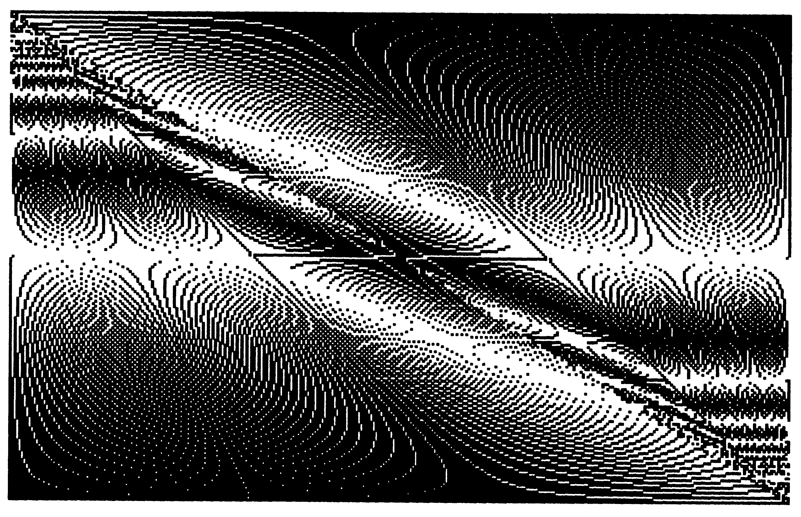
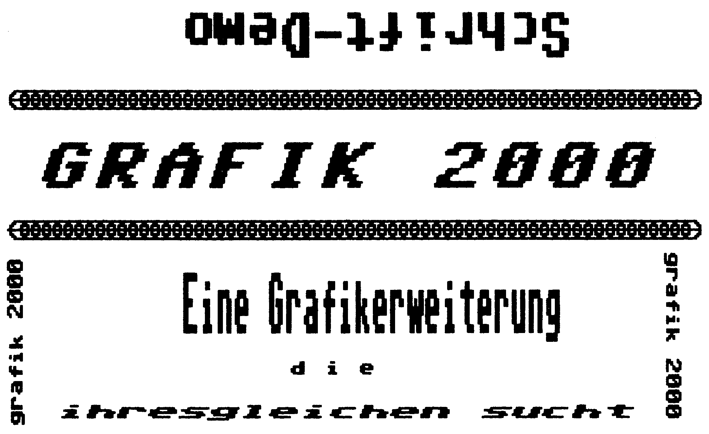

Grafik 2000 – eine Basic-Erweiterung, die es in sich hat
Diese sehr schnelle Befehlserweiterung für den C64 stellt Ihnen 41 neue Basic-Befehle und zwei neue Funktionen zur komfortablen Handhabung der mehrfarbigen HiRes-Grafik zur Verfügung.

Die Befehle sind, wie die Befehle des Basic V2, abkürzbar, vollkommen in den Interpreter integriert und werden selbstverständlich als Token gespeichert. Selbst nach »THEN« ist kein Doppelpunkt notwendig.
Da die zwei unabhängigen Grafikschirme und das Programm selbst außerhalb des Basic-Speichers liegen, stehen dem Benutzer weiterhin 38911 Byte für seine Programme zur Verfügung. Auch Sprites benötigen keinen Basic-Speicherplatz.
Grafik 2000 (Listing 1) unterstützt die farbige HiRes-Grafik des C 64. Diese Grafik ist aus 320 * 200 einzeln ansprechbaren Punkten aufgebaut. Dabei befindet sich der Punkt mit den Koordinaten O/O in der linken oberen und der Punkt mit den Koordinaten 319/199 in der rechten unteren Ecke des Bildschirmes.
Die Farbinformation für je 8 * 8 Punkte liegt im sogenannten Video-RAM. Hier steht in den oberen vier Bits die Farbe für einen gesetzten, in den unteren vier Bits die Farbe für einen gelöschten Punkt. Für den Anwender bedeutet dies, daß in einem 8 * 8-Punkte-Kästchen nur zwei verschiedene Farben vorkommen können.
Anmerkung: Hinter dem Befehlsnamen steht die jeweilige Abkürzung, wobei »« bedeutet, daß der folgende Buchstabe geSHIFTet eingegeben werden muß.
CLEAR CLE Löscht den gesamten Grafikbildschirm. Die Farbe bleibt dabei unverändert.
MODE n M'O Wenn n=1 ist, wird der Grafikmodus eingeschaltet; istn=O, wird auf den Textbildschirm geschaltet. Dabei wird der Groß/Grafik-Modus eingeschaltet.
COLOR p,h co'L Setzt die Farben im Video-RAM. Dabei steht p für die Punktfarbe und h für die Hintergrundfarbe. Es können Werte von O bis 15 für die Farben stehen.
CHANGE CH'A CHANGE wechselt zwischen den beiden Grafikschirmen, indem die jeweiligen Punkte ausgetauscht werden. INVERS IN'V Invertiert die sichtbare Grafik. Das Video-RAM bleibt unverändert.
COMB n CO'M COMB führt eine logische Verknüpfung zwischen den beiden Grafikseiten aus. Das Ergebnis wird in die sichtbare Grafik geschrieben. Die Verknüpfungsart ist mit n wählbar:
n=1!: logisch OR.
n=2: logisch AND
n=3: logisch EXOR
GSAVE a$,dv G'S
GSAVE speichert die verdeckte Grafik mit dem Namen a$ am Gerät mit der Nummer dv ab. Die Parameter können entfallen. Beispiel:
GSAVE "BILD 1",8 Speichert die Grafik BILD 1 auf Diskette Speichert die Grafik ohne Namen auf Kassette ab. GSAVE
CSAVE a$,dv cs Speichert das Video-RAM, die Farbe der Grafik. Die Parameter sind analog zu GSAVE.
GLOAD a$,dv G'L Mit GLOAD kann man die mit GSAVE gespeicherte Grafik oder das mit CSAVE gespeicherte Video-RAM laden. Da dieser Befehl keine Basic-Zeiger verändert, eignet er sich auch zum Laden von Maschinenprogrammen, auch im Direktmodus. SPOINT x,y SP'O Setzt einen Punkt an die Stelle x/y in der Grafik.
CPOINT x,y C'p Löscht den Punkt x/y.
IPOINT x,y PS'C Invertiert den Punkt x/y
PSCLINE x,y PS'C Setzt den Punkt x/y und löscht ab diesem Punkt eine Linie nach unten bis zum Grafikrand. Der Befehl ist besonders für 3D-Grafiken geeignet.
HMARK x,y H'M Setzt eine waagrechte »Markierung« an den Punkt x/y, das heißt, es wird eine fünf Punkt lange Linie gezeichnet, deren Mittelpunkt der Punkt x/y ist.
VMARK x,y V'M Analog HMARK, jedoch wird eine senkrechte Markierung gezeichnet. HLINE y H'L Zeichnet eine durchgehende Horizontale an y.
VLINE x V'L Zeichnet eine durchgehende Vertikale an x.
Mit den letzten vier Befehlen ist es möglich, schnell und einfach Koordinatensysteme zu zeichnen.
SLINE x0,y0,x1,y1 S'L Zeichnet eine Linie von x0/yO nach x1/y1. Die Richtung beziehungsweise Länge ist beliebig.
CLINE x0,y0,x1,y1
Wie SLINE, die Linie wird jedoch gelöscht.
ILINE x0,y0,x1,y1 PL Wie SLINE, die Linie wird jedoch invertiert.
SCIRCLE x,y,a,b S'C 'Zeichnet eine Ellipse mit dem Mittelpunkt x/y und den Radien aundb. CCIRCLE x,y,a,b C'C Wie SCIRCLE, die Ellipse wird jedoch gelöscht.
ICIRCLE x,y,a,b PC Wie SCIRCLE, die Ellipse wird jedoch invertiert.
SELLIPSE x,y,a,b,dw,sw,ew,s S'E Zeichnet einen Ellipsenbogen mit dem Mittelpunkt x/y und den Radien a und b.
Die weiteren Parameter bedeuten:
dw Drehwinkel der Hauptachse einer Ellipse um den Mittelpunkt. Die Ellipse wird mit dw im Uhrzeigersinn um den Mittelpunkt x/y gedreht.
sw und ew geben den Start- und Endwinkel des Ellipsenbogens an.
s gibt den Schrittwinkel an, mit dem die einzelnen Bogenpunkte errechnet werden.
Der Befehl errechnet einzelne Punkte des Ellipsenbogens, die mit einer Linie verbunden werden. Die Winkel müssen im Bogenmaß angegeben werden. Die Drehungen werden im Uhrzeigersinn ausgeführt.
CELLIPSE x,y,a,b,dw,sw,ew,s
Wie SELLIPSE, der Bogen wird jedoch gelöscht.
IELLIPSE x,y,a,b,dw,sw,ew,s PE Wie SELLIPSE, der Bogen wird jedoch invertiert.
STEXT r,b,h,v,a,x,y,a$
Schreibt einen Text in den Grafikschirm.
Die einzelnen Parameter bedeuten:
r Schreibrichtung r = 1 von links nach rechts r = 2 von rechts nach links r = 3 von unten nach oben r = 4 von oben nach unten
Die Schrift ist, der Richtung entsprechend, gekippt.
SW, eW
STE'X
b Breite eines einzelnen Zeichens; von 1 (normal)
bis 25 möglich.
h Höhe eines Zeichens (von 1 bis 25).
v Verschiebung (Kursivschrift)
v gibt die Verschiebung eines Zeichens von seiner Spitze zum Fuß an.
v kann Werte von O (normal) bis zum achtfachen (45 Grad Schräge) der Höhe h annehmen. a Abstand der Zeichen. akann Werte von O bis 199 annehmen. Für Normalschrift ist a=8. Geben die Startkoordinaten an. ist die linke obere Ecke des ersten Zeichens eines Strings.
a$ String- oder numerischer Ausdruck, der gezeichnet werden soll.
Im String kann zwischen den Zeichensätzen umgeschaltet werden: x und y
ctri/9 rvs on
ctrl/O rvs off
ctrl/a Groß/Klein
ctrl/b Klein/Groß
Hinweis: Ohne Umschaltung wird mit dem Groß/Grafik-Zeichensatz in Normalschrift gearbeitet. Wenn ein String außerhalb des Bildschirmes und mit großen Buchstaben gezeichnet wird, kann es vorkommen, daß der Computer bis zu zwei Minuten lang keine Meldung ausgibt. Eristnicht abgestürzt, sondern fährt anschließend mit der Programmausführung fort. CTEXT r,b,h,v,a,x,y,a$ CT Wie STEXT, der Text wird jedoch gelöscht. ITEXT r,b,h,v,a,x,y,a$ PT Wie STEXT, jedoch wird der Text invertiert. FILL x,y FI Malt ein durch Linien oder den Bildschirmrand begrenztes Feld beliebiger Form aus.
x/y geben die Startkoordinaten an. DUPLICATE x0,y0,x1,y1,x,y
Kopiert einen Grafikausschnitt.
Dabei geben xO/yO und x1/y1 die Eckpunkte (links oben/ rechts unten) eines Rechtecks an, das nun so kopiert wird, daß x/y die Koordinaten der linken oberen Ecke der Kopie angeben.
Der Ausschnitt wird so kopiert, daß die Kopie exakt dem Original entspricht. Das Original kann also überschrieben werden.
SCROLL r,x0,y0,x1,y1
Rolliert einen Grafikausschnitt um einen Punkt. Der Ausschnitt wird mit x0/yO und x1/y1 analog zu DUPLICATE definiert.
r bestimmt die Richtung des Rollierens: SC'R
r1 = nach rechts
r2 = nach links
r3 = nach oben
r4 = nach unten
WINDOW y0,y1 w'I
WINDOW ermöglicht die gleichzeitige Anzeige von Text und Grafik. Die beiden Übergangszeilen dazu sind frei wählbar. Die Parameter geben die erste (yO) und letzte (y1) Zeile im Grafikmodus an. Der restliche Bildschirm wird im Textmodus ausgegeben. In den Grenzzeilen sollten keine Textzeichen stehen; der VIC kann diese unter Umständen nicht von der Grafik unterscheiden und unsinnige Zeichen anzeigen. WINDOW hat Vorrang vor MODE n.
WINDOW yO,y1 wird durch WINDOW ohne Parameter abgeschaltet. Der Groß/Grafik-Textmodus wird eingeschaltet. LOWCOL x,y,p,h LO'W Mit LOWCOL kann man gezielt ein Byte des Video-RAMs ändern. x/y geben die Koordinaten des entsprechenden Grafikpunktes an, p die Punkt- und h die Hintergrundfarbe.
SPRITE n,x,y SP'R Mit Sprite kann man die Form eines Sprites anhand der Grafik definieren.
n gibt die Nummer des Sprites an (0-7) und x/y die Koordinaten der linken oberen Ecke eines Grafikausschnittes, nach dem die Spriteform gebildet wird (siehe auch DUPLICATE). Diese Form wird jedoch nicht einem Sprite zugeordnet; die Nummer n zeigt vielmehr die Blocknummer an, in den die Spriteform abgelegt wird. Dies sind die Blöcke 120 (n=0O) bis 127 (n=]7).
Die Blockzeiger liegen in den Adressen 50168 bis 50175 und müssen mit POKE gesetzt werden.
Hinweis: Die Spriteformen gelten nur im Grafikmodus. Im Textmodus gelten die gewohnten Regeln zum Arbeiten mit Sprites von Basic aus.
Das bedeutet, daß man mit WINDOW »gemischte« Sprites erzeugen und zwischen den zwei Definitionssätzen umschalten kann.
SSAVE n,n$,dv S'S Speichert einen Spriteblock mit dem Namen n$ auf dv ab. Zur Nummer n (0-7) siehe auch SPRITE.
SLOAD n,n$,dv sLo Lädt den Spriteblock n. Die Nummer, unter der der Block gespeichert wurde, ist irrelevant. Siehe auch SPRITE und GLOAD.
Grafik 2000 besitzt vier weitere Befehle, die die meisten übrigen Befehle verändern und diese somit auf 140 verschiedene Funktionen erweitern.
PSCREEN n
n=2
PSC'R Alle Befehle, die die Grafik verändern, wirken nicht mehr auf die sichtbare, sondern auf die unsichtbare, zweite Grafik.
(CLEAR,COMBI,HLINE,INVERSTEXT,LINE, CIRCLE,FILL, etc.) n=1 Die Befehle wirken wieder auf die sichtbare Grafik.
TSCREEN n T'S n=2 Die Befehle SPRITE, SCROLL und DUPLICATE sowie die Funktionen TEST und CTEST testen nicht in der sichtbaren, sondern in der unsichtbaren Grafik.
Man kann also mit DUPLICATE Ausschnitte der einen in die andere Grafik übertragen. n=1 schaltet zurück in die sichtbare Grafik. COLPLOT p,h COLUP COLPLOT ermöglicht das mehrfarbige Zeichnen in der HiRes-Grafik.
Parameter: p Punktfarbe (0-15) h Hintergrundfarbe (0-15) COLPLOT p,h bewirkt, daß die Befehle
SPOINT SLINE SCIRCLE SELLIPSE STEXT FILL SCROLL DUPLICATE von nun an das Video-RAM mit der Punktfarbe p setzen. Jeder gesetzte Punkt erhält also die Farbe p; die Farbe der nicht gesetzten Punkte bleibt erhalten.
COLPLOT bewirkt außerdem, daß die Befehle CPOINT CLINE CCIRCLE CELLIPSE CTEXT SCROLL DUPLICATE das Video-RAM mit der Hintergrundfarbe setzen. Jeder gelöschte Punkt erhält die Farbe h; die Farbe der gesetzten Punkte wird nicht verändert.
Die Befehle SCROLL und DUPLICATE setzen sowohl Hintergrund- als auch Punktfarbe, je nachdem, ob ein Punkt gesetzt oder gelöscht wird.
Die Option kann mit COLPLOT ohne Parameter abgeschaltet werden. PLOT n P'L n=2
Die Befehle
SPOINT SLINE SCIRCLE SELLIPSE STEXT SCROLL DUPLICATE arbeiten nicht mehr mit der normalen Punkt-Setzroutine, sondern mit der PSCLINE-Routine.
Es wird also unter jedem gezeichneten Punkt eine Linie bis zum Bildschirmrand gelöscht.
Es lassen sich auf einfachste Weise effektvolle 3D-Bilder auf den Bildschirm zaubern.
Dieser Befehl arbeitet unabhängig von COLPLOT. Es wird nur die Farbe des gezeichneten Punktes gesetzt; die Löschlinie verändert keinesfalls das Video-RAM. n= 1 Schaltet wieder die normale Punktsetzroutine ein.
Hinweis: Die invertierten Befehle werden weder von COL-
PLOT noch von PLOT beeinflußt. Testfunktionen var = TEST (x,y) TE Weist der Variablen var den Wert 1 zu, wenn der Punkt x/y gesetzt ist, ansonsten den Wert O.
var = CTEST (x,y) CTE'S Weist der Variablen var die sichtbare Farbe des Punktes x/y zu (O bis 15).
Siehe auch TSCREEN.
Damit Sie sehen, was in dem Programm »Grafik 2000« steckt, folgen zwei Demo-Listings. Listing 2 demonstriert die Vielfalt der Schriftarten, die durch Variation einiger, weniger Parameter entsteht. Die so erzeugten Schrifttypen lassen sich natürlich in jede Grafik einblenden (Bild 1). Mit nur wenigen Befehlen können Sie die schönsten Bilder konstruieren. Listing 3 zeigt die Anwendung des »ILINE«-Befehls. Die dazugehörige Hardcopy zeigt Bild 2. Übrigens, in Grafik 2000 ist keine Hardcopyroutine integriert. Dafür wurde im 64er, Ausgabe 5/86 das Programm »Super Print« veröffentlicht, das ganz hervorragend mit Grafik 2000 zusammenarbeitet und zwar auf jedem 8-Nadel-Drucker, der über ESC-Sequenzen »CHR$(27)« angesteuert wird.

Sonstiges
Grafik 2000 stellt dem Benutzer eine verbesserte SQR-Routine zur Verfügung. Sie wurde bereits in den Interpreter eingebunden.
Wenn eine Basic-Fehlermeldung ausgegeben wird, schaltet Grafik 2000 den Textmodus ein, und der Befehl WINDOW wird abgeschaltet.
Grafik 2000 verfügt über eine eigene NMI/BREAK-Routine.
Diese schaltet den Textmodus ein, den Befehl WINDOW ab und setzt Rahmen/Hintergrund- und Schriftfarben. Diese Farbe kann man durch POKE selbst bestimmen: POKE 51071,Hintergrundfarbe
POKE 51079,Schriftfarbe
Die Farben werden bereits beim Drücken der RESTORE-Taste ohne die RUN/STOP-Taste gesetzt. Das Programm wird hierbei nicht unterbrochen. Während der Computer Befehle ausführt (ausgenommen ELLIPSE), kann man ihn durch nichts in seiner Arbeit stören. Auch RUN/STOP-RESTORE ist erst nach dem Ausführen eines solchen Befehls möglich.
(Frank-Rüdiger Brendel/ah)TODO
0 REM LINES 10 PLOT1:PSCREEN1:COLPLOT:COLOR1,0:CLEAR:MODE1:POKE53280,0 20 X=319:Y=199 30 FORI=0TOX:ILINE0,0,I,Y:ILINEX,Y,X-I,0:NEXT 40 WINDOW40,158 50 FORI=0TO5000:NEXT:WINDOW READY.